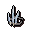
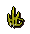

")
Chompy and Jubbly Hunting
Introduction

Chompies and jubbly chompies can be hunted in a few areas around the ogre territories, notably to the west of Jiggig and across the Feldip Hills.
It is worth noting that the chompy hunting grounds are actually quite close to Castle Wars, so a ring of duelling can get you there quite quickly.
Requirements
To hunt ordinary chompies you must have completed the Big Chompy Bird Hunting Quest, so all the same requirements apply.

To hunt jubbly chompies you must have begun saving Skrach Uglogwee in the Recipe for Disaster Quest, so all of those requirements apply.
Recommended Items
In order to hunt chompies you will need an ogre bow and some ogre arrows, you'll also need bloated toads for bait. If you're coming back to chompy hunting after a few more quests and have lost your ogre bow you can purchase a new one from Rantz. It's a good idea to take 600 coins with you, as Rantz often has difficulty remembering how much he charges and prices can vary wildly. If you have lost the bellows needed to inflate toads, you'll have to find it in Rantz's cave again.
To hunt jubbly chompies you need balloon toads, which are overinflated bloated toads. To make a balloon toad you will need a ball of wool, a rock and a bloated toad. Once you have all of the necessary items in your inventory, inflate the bloated toad again.
Although you can only carry three bloated toads or balloon toads in your inventory at any one time, you can have many of them set up. So, if you want to attract more chompies or jubblies, you might like to hunt near a pond where the toads are plentiful and you can make more bloated or balloon toads while you wait.
Bloated toads and balloon toads explode after a while, and can damage anything nearby, so it's best to stand clear while waiting for the birds to swoop in.
A guide to making ogre arrows can be found in the Fletching - Making Arrows section of the Game Guide. While doing the Zogre Flesh Eaters quest you gain access to the ogre composite bow and brutal arrows. The composite bow is much faster, and brutal arrows range from bronze to rune tips, so can do much more damage. If you plan on slaughtering a good number of chompies or jubblies, this combination is a good idea. You can learn how to make composite ogre bows in the Fletching - Making Bows section of the Game Guide, while brutal arrows are explained in the Fletching - Making Arrows section.
![[image]](../../img/main/kbase/guides/hundredquest/jubbly.gif) If you want to eat the chompies and jubblies yourself, you will need to ensure that you have the right equipment. Chompies can be cooked on the chompy roasting spits by Rantz's cave or near Jiggig, or using a mobile spit. Jubblies can only be cooked using the chompy roasting spits by Rantz's cave and near Jiggig. Chompies and Jubblies cannot be cooked in any other way.
If you want to eat the chompies and jubblies yourself, you will need to ensure that you have the right equipment. Chompies can be cooked on the chompy roasting spits by Rantz's cave or near Jiggig, or using a mobile spit. Jubblies can only be cooked using the chompy roasting spits by Rantz's cave and near Jiggig. Chompies and Jubblies cannot be cooked in any other way.
Hunting Chompies and Jubbly Chompies

Occasionally the chompies and jubbly chompies won't be impressed by your toads and will refuse to land, but moving to another location and trying again should, eventually, result in you getting to hunt some.
Rewards
Rantz seems to place a lot of value on hats, so it isn't very surprising that he offers a number of hats as prizes for anyone who 'sticks lotsa chompies'. You automatically cut a notch into your bow for every chompy or jubbly you kill, and to claim your hat you simply need to show Rantz these notches.
In addition to this, when you've got 4000 notches on your bow you will get 30000 Ranged XP.
You can check how many chompies you've killed by putting your ogre bow into your inventory, right-clicking on it and selecting 'Check Kills'. If you have to replace a lost ogre bow, your new one will automatically have all your notches.
| Free Hat | Number of Notches | Free Hat | Number of Notches | |
![[image]](../../img/main/kbase/guides/chompy/cbhat1.gif) Ogre bowman hat |
30 | ![[image]](../../img/main/kbase/guides/chompy/cbhat2.gif) Bowman hat |
40 | |
![[image]](../../img/main/kbase/guides/chompy/cbhat3.gif) Ogre yeoman hat |
50 | ![[image]](../../img/main/kbase/guides/chompy/cbhat4.gif) Yeoman hat |
70 | |
![[image]](../../img/main/kbase/guides/chompy/cbhat5.gif) Ogre marksman |
95 | ![[image]](../../img/main/kbase/guides/chompy/cbhat6.gif) Marksman hat |
125 | |
|  Ogre woodsman hat |
170 | ![[image]](../../img/main/kbase/guides/chompy/cbhat8.gif) Woodsman hat |
225 | |
![[image]](../../img/main/kbase/guides/chompy/cbhat9.gif) Ogre forester hat |
300 | ![[image]](../../img/main/kbase/guides/chompy/cbhat10.gif) Forester hat |
400 | |
![[image]](../../img/main/kbase/guides/chompy/cbhat11.gif) Ogre bowmaster hat |
550 |  Bowmaster hat |
700 | |
![[image]](../../img/main/kbase/guides/chompy/cbhat13.gif) Ogre expert hat |
1000 | ![[image]](../../img/main/kbase/guides/chompy/cbhat14.gif) Expert hat |
1300 | |
![[image]](../../img/main/kbase/guides/chompy/cbhat15.gif) Ogre dragon archer hat |
1700 | ![[image]](../../img/main/kbase/guides/chompy/cbhat16.gif) Dragon archer hat |
2250 | |
![[image]](../../img/main/kbase/guides/chompy/cbhat17.gif) Expert ogre dragon archer hat |
3000 | ![[image]](../../img/main/kbase/guides/chompy/cbhat18.gif) Expert dragon archer hat |
4000 |

More articles in
Miscellaneous Guides
|
|
|
Further Help
If this article does not help you, you may find the following sections of the RuneScape site helpful:
|
|